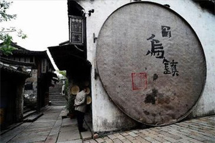
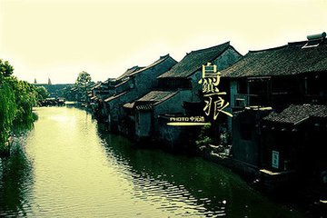

morly旅游圈
完整保存着晚清和民国时期水乡古镇的风貌和格局，素有“鱼米之乡，丝绸之府”之称。 观西栅夜景，乘摇橹船漫游水巷，看民俗表演等都是来乌镇不错的体验。 红烧羊肉、白水鱼、酱鸭是乌镇最受欢迎的美味，尤其是羊肉最有名。 街上特产店很多。纯手工酿成的三白酒、陶叙昌牌豆瓣酱、蓝印花布制成的头巾等都是做伴手礼的不错选择。 景区夜景是不能错过的，乌镇现已取消夜游票，改为全天一票制，门票包括景区内所有景点和表演。 如果想一天游览完，上午要早到乌镇，先去东栅，午后游西栅，晚上在西栅看夜景。
东栅区: 2001年，乌镇保护开发东栅工程东栅景区正式对外开放，一期景区面积约0.46平方公里，保护建筑面积近6万平方米，是中国著名的古镇旅游胜地。景区游程达2公里，由东栅老街、观前街、河边水阁、廊棚组成，工程全部完工后，东栅景区占地面积约为1.98平方公里，设有十多个景点。
西栅区: 西栅位于乌镇西大街，毗邻古老的京杭大运河，并有公路直通江苏、苏州和桐乡市区，交通十分便利，与东栅以旅游观光为主题不同，西栅打造的是商务旅游、休闲度假为主。西栅景区占地4.92平方公里，纵横交叉河道9000多米，需坐渡船出入，有古桥72座，河道密度和石桥数均为全国古镇之最，景区内保存有精美的明清建筑25万平方米，横贯景区东西的西栅老街长度达1.8公里，两岸临河水阁绵延1.8公里余。景区北部区域则是五万多平方米的天然湿地。
江南百床馆: 江南百床馆，是中国第一家专门收藏、展出江南古床的博物馆，坐落在乌镇东大街210号，又称赵家厅，面积约1200多平方米，内收数十张明、清、近代的江南古床精品。 馆内第一展厅陈列的有：明·马蹄足大笔管式架子床等，采用木架构造形式，强调家具形体的线条形象；第二展厅的有清·拔步千工床等床，用料为黄杨木，长217公分，深366公分，高292公分，前后共有三叠，此床历时3年方才雕成，用工千余，故有其名。
江浙分府: 江浙分府明代称浙直分署，是乌镇历史上特有的一个政府机关。职掌巡盐捕盗，兼理地方词讼，俗称二府衙门。自明朝嘉靖间设立，至民国初撤销，几经革复，数易其址，历时三百七十余年。 江南民俗馆，展示了晚清至民国时期乌镇民间有关寿庆礼仪、婚育习俗和岁时节令等民俗。蜡像塑出婚丧嫁娶的话剧。衣俗厅以实物、蜡像、照片等不同手段展示百余年前江南民间穿着习俗。
江南木雕陈列馆: 这里原是东栅徐家的豪宅，又名百花厅，以其木雕精美而闻名。的正室偏屋内更陈列了丰富的中国古代木雕精品器件。木雕馆里的木雕取材丰富，有“八仙过海”、“郭子仪祝寿”等民间传说，有“打渔”、“斗蟋蟀”、“敲锣打鼓”等生活场景，也有“龙凤呈祥”、“松鼠吃葡萄”、“梅兰竹菊”等传统图样，刻画出具有江南地方特色的民俗风情。
余榴梁钱币馆: 余榴梁，土生土长的乌镇人，钱币收藏大家，著有《中国花钱》、《中国鉴赏与收藏》、《钱币》、《钱币漫谈》、《钱币学钢要》、《世界流通铸币》等十多部学术专著。他苦心集藏四十年，拥有世界上230多个国家和地区的历代钱币近26000余种，其中有金属流通货币、纸币、花钱等，材质有金、银、铜、铁、锡、铝、铅、锑、陶、镍、纸、竹、骨、琉璃、塑料等15种，上起夏商，下至现代。
修真观: 修真观在乌镇中市。北宋咸平元年（998年），道士张洞明在此结庐，修真得道，乃创建“修真观”。修真观与苏州玄妙观、濮院翔云观并称江南三大道观，地位极为崇高。 修真观共设三进，一进为山门，二进是东岳大殿，三进为玉皇阁；两边分设十殿阎王、瘟元帅、财神等配殿；山门前的广场也依旧开阔宏畅。修真观的山门正门上方挂有一特大算盘，下方书对联一副：人有千算，天则一算，极具警世意味。
茅盾故居: 茅盾故居是嘉兴市迄今唯一的中国全国重点文物保护单位，坐落在乌镇市河东侧的观前街17号，四开间两进，层木结构楼房，坐北朝南，总面积约450平方米。故居分东西两个单元，是茅盾的曾祖父分两次购买。故居包括卧室、书房、餐厅等建筑，其家具与布置仍是茅盾当初居住时的样子。
汇源当铺: 在应家桥和南花桥之间，五开间的门面，楼上楼下，1.8米高的柜台。据《乌青镇志》记载，乌镇典当行最多时达13家，到了1931年，只有汇源当1家还支撑。当铺四周有高墙围护，靠外墙脚均用一人头高的条石筑就，使盗贼无法翻墙、掘洞，更有高出屋顶的更楼有人日夜瞭望。
交通: 1、乌镇没有机场，如坐飞机，可到邻近桐乡的上海、杭州等城市，再转火车或长途大巴。 2、火车可至桐乡火车站，再做公交K282到乌镇汽车站。 3、长途汽车直接坐至桐乡汽车站再转乌镇汽车站，上海、杭州、西塘等都有直接到达乌镇汽车站的班次。 以上方式到达乌镇汽车站后，可坐公交K350，到乌镇东栅、西栅景区；东栅西栅景区之间有免费接驳车可以乘坐，也可以步行。
门票: 东栅:100人民币；西栅:120人民币；联票:150人民币 (1月1日-12月31日 周一-周日) 免票:1.2米以下儿童免票。 tips: 凭老年人优待证（无此证的70周岁以上老人可凭身份证）、中小学学生证可享优惠票（东栅60元、西栅80元、东西栅联票105元）； 1.2-1.5米儿童可享儿童票（东栅50元、西栅60元、东西栅联票105元）。
开放时间: 07:00-18:00(东栅景区) (5月1日-9月30日 周一-周日) 07:00-17:30(东栅景区) (10月1日-次年4月30日 周一-周日)09:00-22:00(西栅景区) (10月1日-次年4月30日 周一-周日)
内容整理至网络，如有侵权，请联系我们！1255394075@qq.com
 